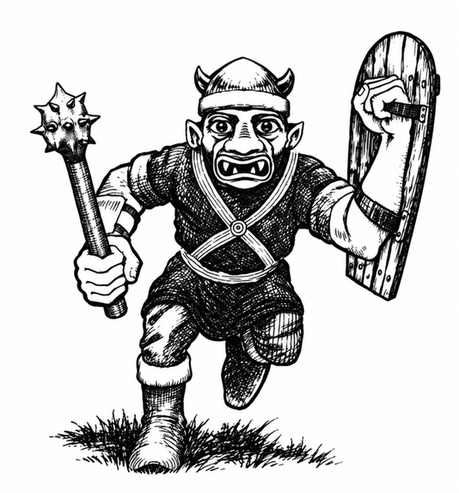

地精 · Goblin
 |
|
地精实行部落制度，由最强者统治其他成员，并向地精王效忠。它们可能与狗头人有远亲关系。地精和狗头人一样，喜欢阴暗环境；与地表相比，它们更偏好洞穴等地下住所。地精憎恶明亮日光，在阳光下攻击骰承受 −1 惩罚；红外视觉范围为 60 尺。
每遇到 40 名地精，就有一名首领和四名助手，实力相当于兽人：每人有 7 点生命值，并按完整 1 颗生命骰的怪物攻击。若遇到 200 名或更多地精，还会额外出现一名副酋长与 2–8 名护卫；每人按大地精的能力战斗，生命值 8 点、护甲等级 5，每次造成 1–8 点伤害。遭遇的地精队伍有 25% 概率让 10% 的成员骑乘巨狼；若如此，还会有 10–40 只没有骑手的巨狼同行。
地精巢穴还会有一名酋长、2–8 名贴身护卫，以及雌性与幼崽；雌性数量相当于雄性的 60%，幼崽相当于雄性的 100%。酋长与贴身护卫有 9–14 点生命值、护甲等级 4，按豺狼人的能力战斗，每次造成 2–8 点伤害。地精巢穴至少有 60% 概率由 5–30 只巨狼守卫；另有 20% 概率有 2–12 只熊地精在巢穴中。
地精的武器配置通常如下：
| 武器组合 | 概率 |
|---|---|
| 短剑与短弓 | 10% |
| 短剑与矛 | 20% |
| 棍棒与投石索 | 15% |
| 棍棒与矛 | 40% |
| 棍棒与短剑 | 15% |
首领与护卫通常装备最好的武器，各持两件。
地精是合格的矿工，有 25% 概率察觉新建或不同寻常的结构。它们憎恨侏儒与矮人，会优先攻击这两类生物；地精也喜欢抓捕奴隶与施加酷刑。
地精会说自己的语言、守序邪恶阵营语、狗头人语、兽人语和大地精语。
外观。 地精肤色从黄色、暗橙色到砖红色不等，眼睛为红色至柠檬黄色。它们穿深色皮革装备，衣物颜色暗淡、污浊，常见褐灰、脏灰或污红褐色。地精通常能活约 50 年。